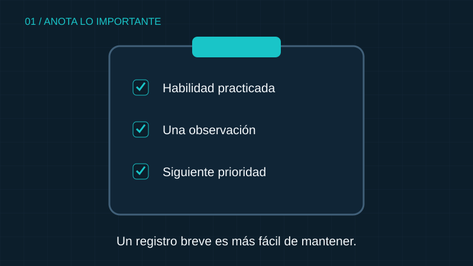

01 / REGISTRAR
Anota algo concreto
Un registro sencillo puede incluir la fecha, la habilidad practicada y una observación. Por ejemplo, puedes anotar si mantuviste una mejor distancia con tu compañero.